MY WORKS
- 보도자료
- 웹자보
- 행사·데이터
- 디자인·UI
01 / PRESS RELEASE
보도자료 작성
- 목적
- 역할
- 결과물
보도자료_조용익_부천시장_후보_선대위_발대식.hwp
HWP(안) 원문
담당자 배포 일자 2026년 5월 16일(토) 조용익 부천시장 후보, 16일 ‘용용 캠프’ 발대식 개최…“재선 시장이 부천의 안정적 발전 이끌 것” - 서영석·김기표·이건태 의원 ‘총괄선대위원장’ 합류... 민주당 원팀 결속력 과시 - 경선 후보 서진웅·한병환·김광민 ‘상임선대위원장’ 으로 원팀 선대위 완성 - 조 시장 “우리 손으로 해내겠습니다”... ‘손바닥 페인팅’ 퍼포먼스로 의지 피력 더불어민주당 조용익 부천시장 후보가 16일 토요일 오후 2시, 자신의 선거 사무소에서 ‘용용 캠프’ 선거대책위원회 발대식을 열고 제9회 전국동시지방선거를 향한 공식 행보를 시작했다. 재선에 도전하는 조 시장은 이날 행사에서 부천의 중단 없는 성장을 위해 시정의 연속성이 확보되어야 함을 강조하며, ‘안정적 지속 발전’을 핵심 목표로 제시했다. 이번 선대위는 당내 주요 인사들이 대거 참여해 구성됐다. 서영석(부천시 갑)·김기표(부천시 을)·이건태(부천시 병) 국회의원이 총괄선거대책위원장을 맡았으며, 경선을 치렀던 서진웅·한병환·김광민 예비후보도 상임선거대책위원장으로 이름을 올렸다. 이 밖에도 지역 정치권 인사들과 풍부한 행정 경험을 가진 인재 등 다양한 분야의 인사들이 대거 합류하여 1321명 규모의 선거대책위원회를 구성하였다. 이를 통해 조용익 부천시장 후보가 가진 지역 장악력을 보여주면서 민주당 유권자들을 하나로 모으고 안정적인 운영이 기대된다는 반응도 나온다. 조 후보 측은 “이번 발대식은 단순 조직 출범이 아니라 민주당 원팀 체제가 굳건함을 알리고 부천시 발전에 대한 각오와 뜻을 제시한 것”이라고 밝혔다. 현장에서는 추미애 경기도지사 후보와 한병도 원내대표 등의 영상 축사가 상영되어 발대식을 축하했다. 추미애 경기도지사 후보와 한병도 원내대표 등은 조용익 후보의 지난 4년 성과를 높이 평가하며, "경기도와 부천이 하나로 뭉친 강력한 원팀 체제를 통해 지선 승리를 이뤄내자"는 뜻을 밝혔다. 행사의 주요 순서로 조용익 후보를 포함한 참석자들이 손에 페인트를 바르고 현수막에 찍는 퍼포먼스가 진행됐다. 조 후보는 이와 함께 “우리 손으로 해내겠습니다!”라는 문구를 내걸며 선거 승리와 지역 발전에 대한 실천 의지를 보였다. ▲부천 과학고 유치 ▲대한항공·SK하이닉스 등 부천대장 도시첨단산업단지 대기업 유치 ▲신도시와 원도심의 균형발전 및 주거환경 개선 추진 ▲생애주기 맞춤 부천형 기본사회 ▲KTX-이음열차 소사역 정차 추진 등을 핵심 공약으로 제시하면서 조용익 후보는 “현재 부천시는 다시 한번 더 크게 나아갈 준비가 되었고 더 큰 부천을 만드는 시장이 되겠다”고 다짐했다. 끝. 별첨 1. 발대식 행사 사진 (강단에 올라간 시장님 사진 1장, 손바닥 퍼포먼스 진행 사진 1장) 2. 손바닥 퍼포먼스가 종료된 결과물 사진 (전체)
[보도자료] 조용익 부천시장 후보, “곽내경 후보, TV 토론서 명백한 허위사실 발언…부천시민께 사과하라” 촉구.hwp
HWP 원문
담당자 황남구 010-2949-8597 배포 일자 2026년 5월 29일(금) 조용익 부천시장 후보, “곽내경 후보, TV 토론서 명백한 허위사실 발언…부천시민께 사과하라” 촉구 - 곽 후보의 ‘원미동 3080 주민들이 시장을 만나지 못했다’ TV 토론 발언에 정면 반박 - 조 후보, 주민 간담회·행정부처 조율 등 구체적 ‘소통 일지’ 공개하며 거짓 주장 규명 - 공직선거법상 ‘허위사실공표죄’ 언급하며 강력 경고… “단순 말실수 아닌 중대 범죄” 조용익 더불어민주당 부천시장 후보는 곽내경 국민의힘 후보가 TV 토론회 도중 내뱉은 발언을 ‘명백한 거짓말이자 허위사실’로 규정하며 부천시민 앞에서의 공식 사과를 촉구했다. 조 후보는 29일 입장문을 통해, 지난 5월 27일 선관위 주관 ‘제9회 전국동시지방선거 부천시장선거 후보자 토론회’에서 나온 곽 후보의 “원미동 3080 도심 개발에서 주민들이 가장 애석하고 마음 아팠던 부분이 ‘시장을 만나지 못했던 부분’입니다”라고 발언한 것을 정면 반박했다. 조 후보는 “해당 발언은 명백한 허위사실”이라며, 그간 민선 8기 부천시가 원미동 일대 낙후된 원도심 개발을 위해 주민 및 관계 기관과 치열하게 소통해 온 구체적 행보를 공개했다. ‘부천원미 도심 공공주택 복합사업(공공주도 3080+)’은 문재인 정부 시절 선도사업으로 시작돼 2023년 12월 전국 최초로 복합계획승인까지 받았으나, 윤석열 정권 시기 들어 LH의 사업성 악화 핑계로 무기한 연기되며 멈춰 섰던 사업이다. 이를 타개하기 위해 조 후보는 민선 8기 부천시장으로서 주민들과 직접 간담회를 갖고 현장의 목소리를 수렴했으며, 이를 바탕으로 다각적인 행정·정치적 돌파구를 마련해 왔다. ▲2025년 8월 12일, 부천시청 열린시장실에서 지역 주민들로부터 직접 의견 수렴 ▲2025년 8월 13일, LH를 상대로 조속한 사업 추진 공개 촉구 ▲2025년 9월 9일, 우상호 당시 이재명 정부 정무수석을 방문해 신속 추진 필요성 피력 및 적극 건의 ▲2025년 9월 9일, 국회 국토교통위원회 전용기 의원을 만나 현안 해결 건의 ▲2025년 9월 12일, 김윤덕 국토교통부 장관을 찾아 현안 해결 건의 ▲2025년 9월 15일, 부천시 시민소통 프로그램 ‘틈만나면, 현장속으로’를 통해 지역 주민 대상 ‘후속 조치 설명’ ▲2025년 9월 24일, 분양가 재산정 및 공공기여 완화 등 사업성 보정을 통한 '사업 재추진' 성과 도출 등 조 후보는 그간 쏟은 소통과 노력의 과정을 상세히 설명했다. 박윤희 부천원미 도심 공공주택 복합사업 주민대표회의 위원장을 비롯한 지역 주민들은 사업 재추진과 관련해 조 후보에게 직접 감사를 표한 것으로 전해졌다. 조 후보는 “멈춰있던 사업이 재추진되기까지의 과정은 전혀 알지 못한 채 ‘주민들이 시장을 만나지 못했다’고 발언한 곽 후보의 무지는 가히 충격적”이라며 “언론에서 보도하는 부천시 뉴스만 찾아봐도 어렵지 않게 알 수 있는 사실이기 때문”이라고 지적했다. 아울러 조 후보는 “원도심을 비롯한 부천시민의 주거환경 개선과 균형발전은 결코 양보할 수 없는 시정 철학”이라며 “기회가 닿을 때마다 주민들을 뵙고 소통하며 그분들의 입장을 정책에 반영하기 위해 안팎으로 목소리를 높여왔다”고 강조했다. 특히 조 후보는 공직선거법 제250조(허위사실공표죄)를 언급하며 곽 후보의 발언이 지닌 법적 무게를 짚었다. 조 후보는 “당선 혹은 낙선을 목적으로 허위사실을 공표하는 행위는 당선 무효형에 이르는 중대한 범죄”라며 “단순한 ‘말실수’나 ‘정치적 수사’로 넘어갈 수 있는 단계를 넘어섰다”고 비판했다. 마지막으로 조 후보는 “곽 후보는 자신의 거짓말과 허위사실 발언을 바로잡고 부천시민 앞에 엄중히 사죄해야 한다”며 “그것이 뒤늦게나마 자신의 잘못에 책임을 지는 최소한의 양심”이라고 말했다. 끝. 별첨 1-1. 조용익 부천시장이 2025년 8월 12일 시청 5층 열린시장실 회의실에서 간담회를 열고 지역 주민들로부터 의견을 수렴하고 있다. 별첨 1-2. 조용익 부천시장이 2025년 9월 9일 국회 국토교통위원회 위원인 전용기 의원을 만나 주요 현안사업 협조 건의서를 전달하고 있다. 별첨 1-3. 조용익 부천시장이 2025년 9월 12일 김윤덕 국토교통부 장관을 만나 해당 현안을 직접 설명하면서 빠른 해결을 건의하고 있다. 별첨 1-4. 조용익 부천시장이 2025년 9월 15일 시청 1층 시민상담실에서 간담회를 열고 지역 주민들에게 현안 후속 조치를 설명하고 있다. 별첨 2. 조용익 부천시장 후보 입장문
[보도자료] 조용익 부천시장, 후보 등록 완료…“검증된 실력으로 부천 대도약 실현”.hwp
HWP 원문
담당자 황남구 010-2949-8597 배포 일자 2026년 5월 14일(목) 조용익 부천시장, 후보 등록 완료…“검증된 실력으로 부천 대도약 실현” - 조용익 시장, 원미구선관위 찾아 제9회 전국동시지방선거 부천시장 후보 등록 완료 - “민선 8기 부천시장으로서 시민과 함께 변화 이끌어…이제는 부천 대도약 실현” - “검증된 실력과 강력한 추진력으로 ‘다시 함께, 더 큰 부천’을 반드시 이뤄내겠다” 재선 도전에 나선 조용익 부천시장이 제9회 전국동시지방선거 부천시장 선거 후보 등록을 마쳤다. 더불어민주당 소속인 조용익 후보는 14일 원미구선거관리위원회를 찾아 후보 등록 서류를 제출했다. 후보 등록을 마친 그는 “민선 8기 부천시장으로서 4년간 시민과 함께 부천의 변화를 이끌어왔다”며 “이제는 ‘재선 시장’이 되어 부천의 대도약을 향해 더욱 거침없이 나아가겠다”고 포부를 밝혔다. 이어 “검증된 실력과 강력한 추진력으로 시민 여러분과 ‘다시 함께, 더 큰 부천’을 반드시 이뤄내겠다”고 강한 의지를 드러냈다. 조 후보는 이번 선거에서 ▲상동특별계획구역 AI 콤팩트 시티 조성 ▲부천종합운동장 일원 도시혁신공간 조성 ▲청년 취·창업 통합 지원센터 운영 및 청년드림센터 조성 ▲부천형 키즈카페 조성 ▲부천 반려견 테마파크 조성 등을 5대 공약으로 내세웠다. 아울러 ▲원도심·신도시의 균형발전과 공간복지 ▲GTX-B와 대장-홍대선의 차질 없는 추진, 수도권 서남부 광역철도(제2경인선) 및 KTX-이음열차 소사역 정차의 성공적 추진, 서울 사당·강남 방면 광역버스 노선 확충 ▲생애주기 맞춤 부천형 기본사회 강화 ▲문화도시 강점을 살린 문화기본시대 선도 등을 약속했다. 조 후보는 “겸허하고 낮은 자세로 시민의 삶과 현장 속으로 깊이 들어가 민생 회복과 이재명 정부의 성공을 적극 뒷받침하겠다”며 “민주당의 유능함과 부천의 자긍심을 가슴에 품고 시민 곁에 더 가까이 다가가겠다”고 강조했다. 끝. 별첨 1. 조용익 부천시장 후보 등록 현장 모습(사진 2개)
웹자보 / 노무현 대통령 서거 17주기 SNS 게시글(안)
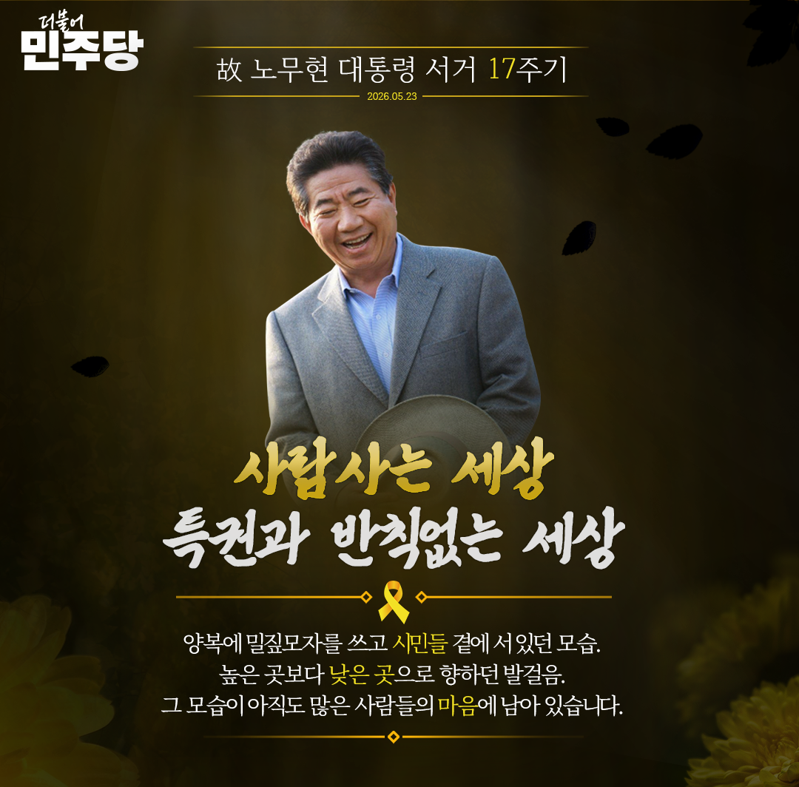
Facebook Post
오월이 되면 늘 생각나는 그 분이 있습니다.
양복에 밀짚모자를 쓰고 시민들 곁에 서 있던 모습.
높은 곳보다 낮은 곳으로 향하던 발걸음.
그 모습이 아직도 많은 사람의 마음에 남아 있습니다.
어느새 열일곱 번째 봄이 돌아왔습니다.
우리는 다시 노무현 대통령님을 기억합니다.
특권과 반칙 없는 세상을 말했던 정치, 시민의 참여를 민주주의의 힘으로 믿었던 정치를 기억합니다.
“사람 사는 세상”
그 말은 시간이 지나도 낡지 않았습니다.
오히려 우리가 다시 붙잡아야 할 말이 되었습니다.
이번 노무현 대통령 서거 17주기 추모 슬로건은
<내 삶의 민주주의, 광장에서 마을로> 입니다.
지난 내란의 시간 속에서 우리는 민주주의가 저절로 지켜지지 않는다는 사실을 다시 확인했습니다.
시민이 깨어 있어야 민주주의가 바로 서고 시민의 삶으로 들어가야 민주주의는 더 단단해집니다.
이제 그 마음을 부천의 마을, 시민의 일상으로 이어가겠습니다.
시민의 목소리를 더 가까이에서 듣고 부천의 문제를 시민과 함께 풀어가겠습니다.
부천은 시민의 힘으로 성장해 온 도시입니다.
시민 한 분 한 분의 삶 가까이에서 답을 찾고 사람을 먼저 생각하는 시정을 다시 한번 이어가겠습니다.
노무현 정신을 마음에 새깁니다.
사람사는 세상을 향한 길을 부천 시민과 함께 걷겠습니다.
노무현 대통령님을 기억합니다.
02 / SNS COPY
웹자보
- 목적후보자 SNS에 노무현 대통령 서거 17주기 추모 게시글 작성
- 역할게시글에 사용될 추모글 작성과 함께 업로드될 웹자보 제작
- 결과물웹자보 / SNS 게시글
03 / CAMPAIGN DATA
선거캠프 활동
- 목적행사자료, 방명록, 선대위 명단, 개표자료를 실무용으로 정리, 관리
- 역할행사에 사용될 명찰폼 제작, 제안서 HWP 작성, 방문기록 정리, 선거구 기준 데이터 재분류, 임명장 발급
- 결과물명찰 양식, 문서화된 방명록, 선대위 명단, 무효투표율 정리표, 제안서 전달식 행사 제안서
청년타운홀미팅 명찰폼.hwp / 방명록.xlsm / 선대위 명단.xlsx / 부천시8회지선 개표결과.xlsx / 행사 제안서.hwp
-
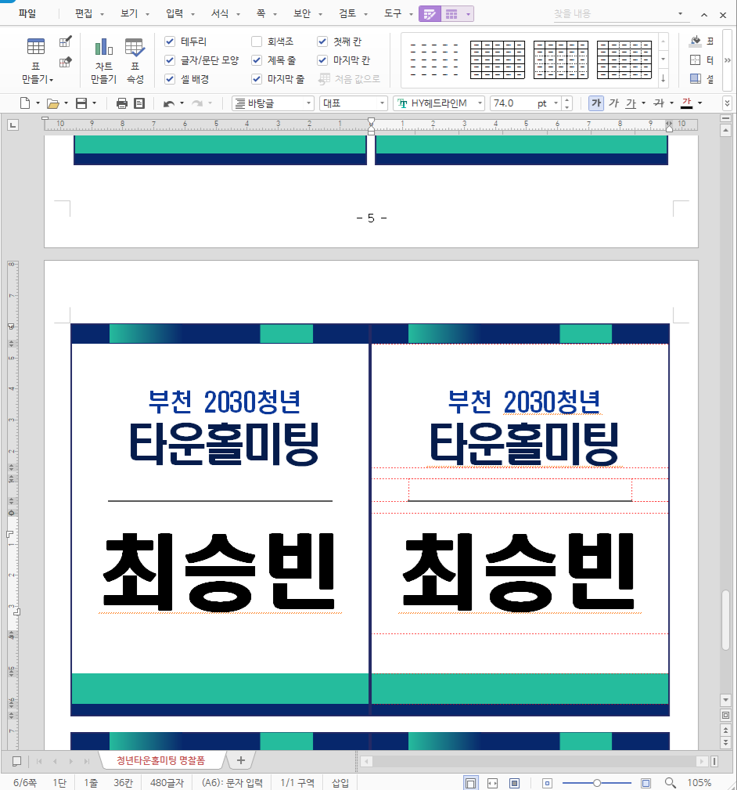
행사용 명찰 HWP
-
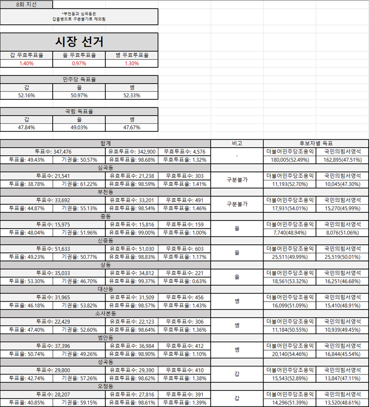
8회 지선 개표결과 갑·을·병 기준 재정리
-
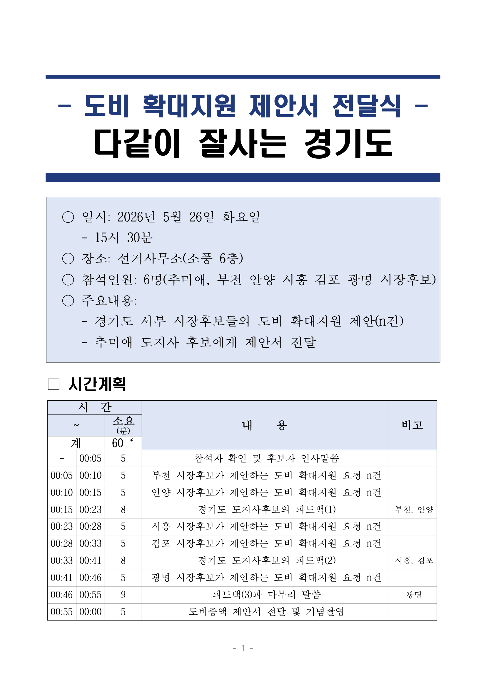
정책사업 도비 비율조정안 전달 행사 제안서 첫 페이지
공개 포트폴리오용 화면에서는 타인의 실명, 연락처, 추천자 정보는 가렸습니다.
제작 중 웹게임 UI 일부
-
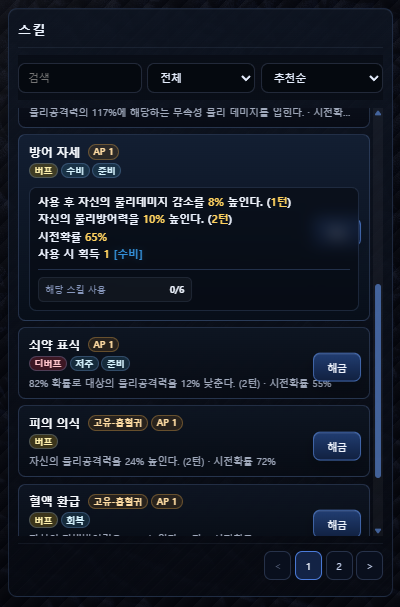
스킬 목록
-
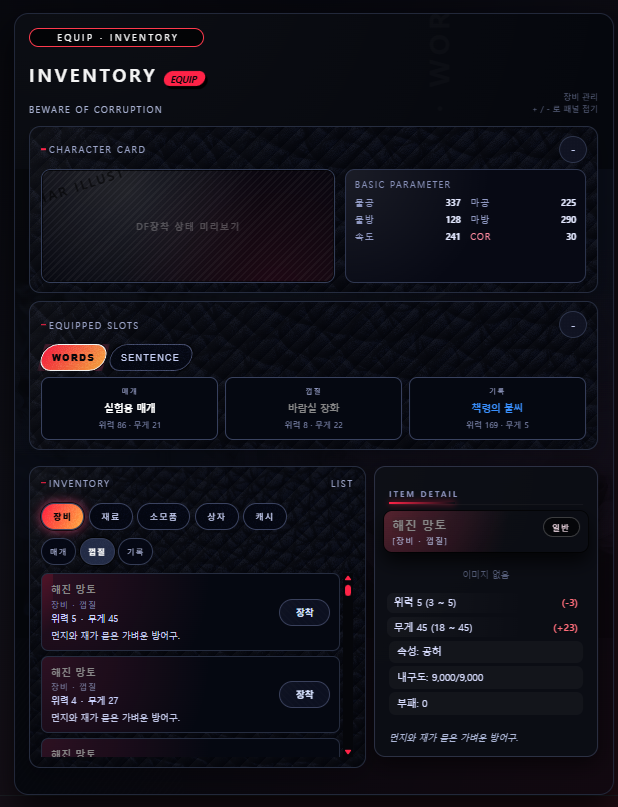
인벤토리 / 장비
-
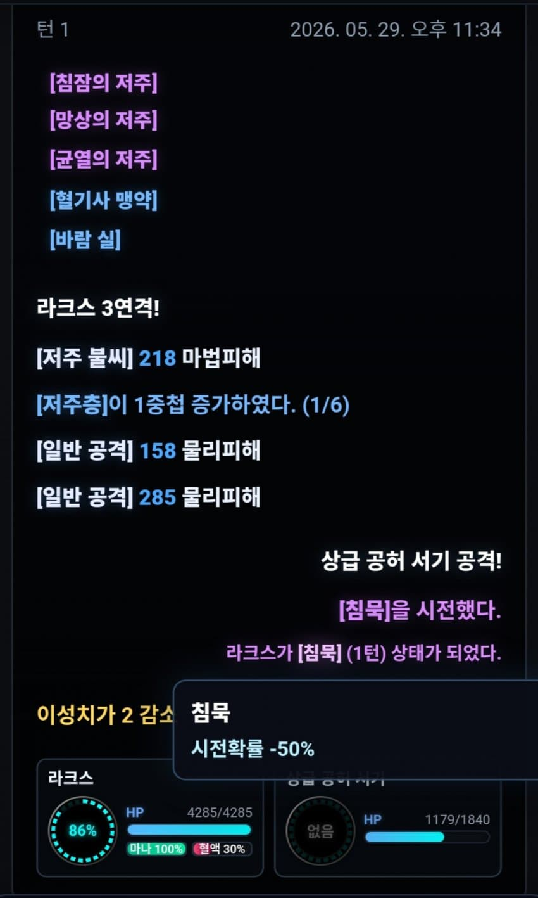
전투 로그
-
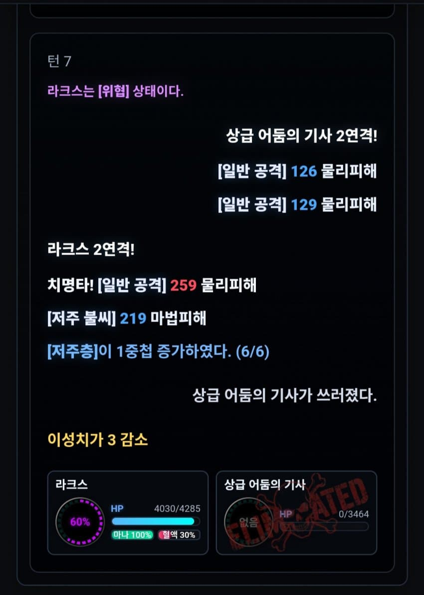
전투 로그 2
웹 UI 시안
-
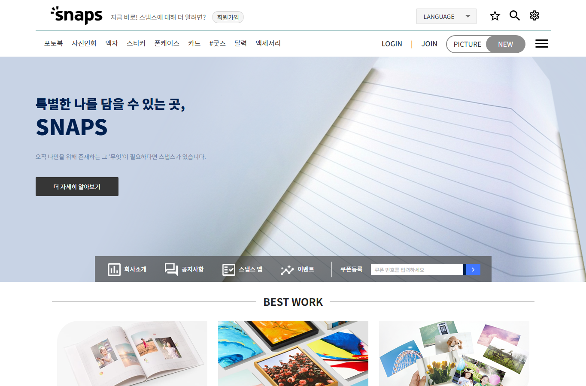
메인 화면 일부
-
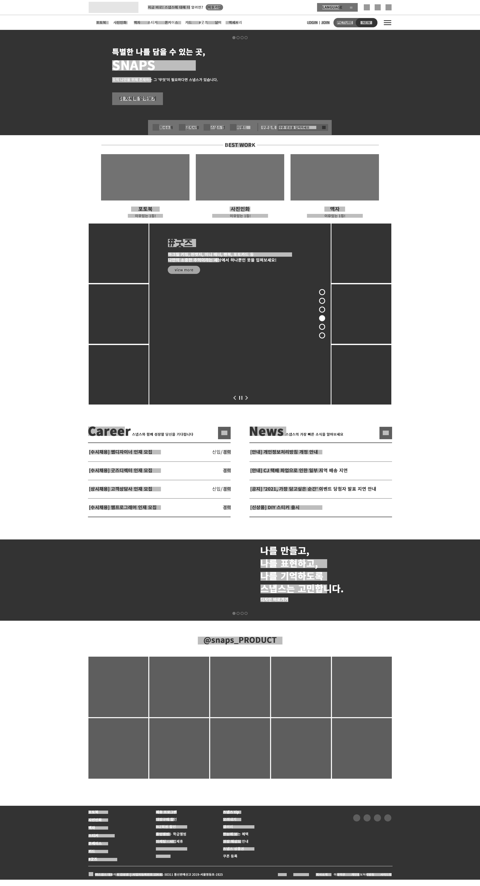
와이어프레임
메인 화면 구성 과정
-
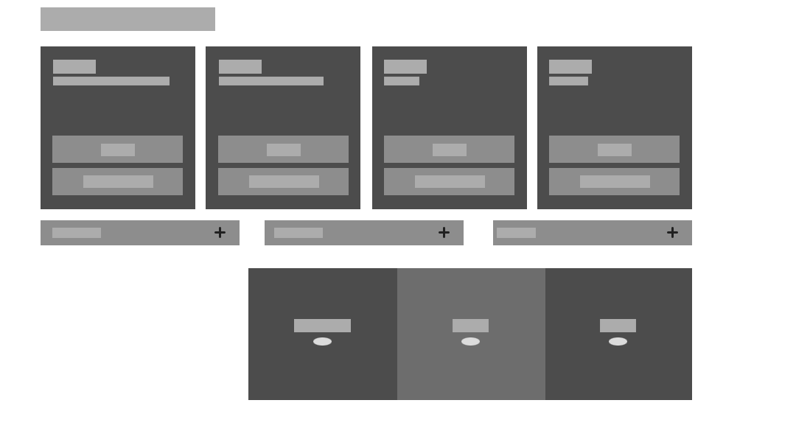
구조
-
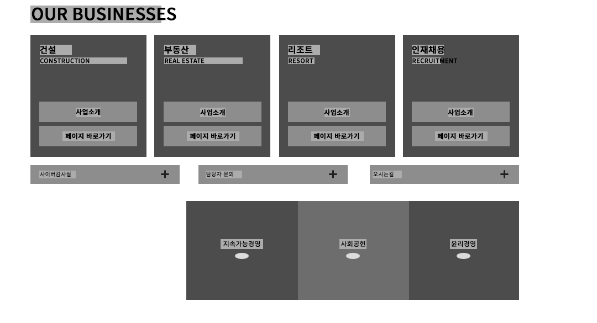
문구
-
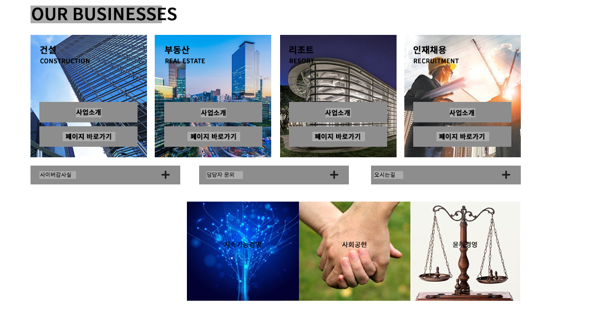
이미지
-
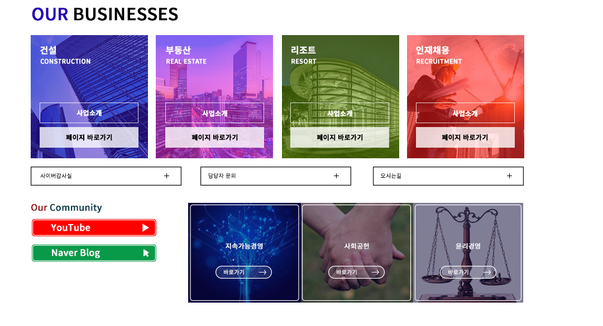
컬러
제작게임 데모 티저
편집본 전체
04 / PERSONAL WORK
개인작업물
- 목적
- 역할
- 결과물